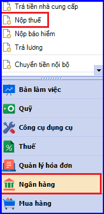
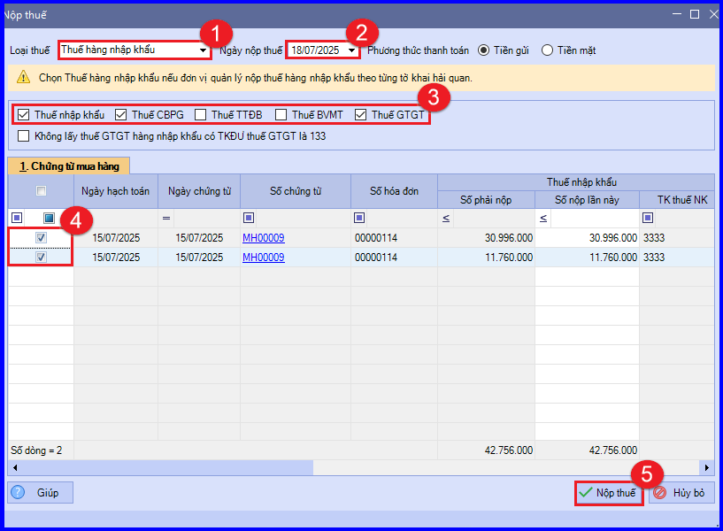
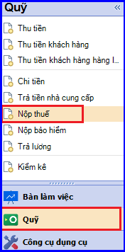
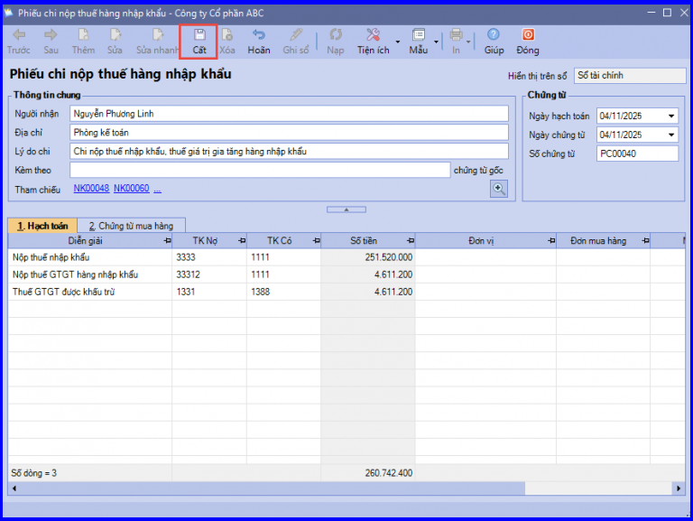

Hướng dẫn cách hạch toán ghi sổ nghiệp vụ nộp thuế hàng nhập khẩu bằng tiền mặt hoặc tiền gửi ngân hàng trên phần mềm Misa
1. Nộp thuế hàng nhập khẩu bằng tiền gửi ngân hàng
Khi công ty phát sinh nghiệp vụ nộp thuế GTGT hàng nhập khẩu bằng tiền gửi ngân hàng, sẽ phát sinh các hoạt động sau:
- Căn cứ vào số thuế GTGT phải nộp do cơ quan hải quan xác định, nhân viên chịu trách nhiệm mua hàng nhập khẩu yêu cầu chuyển khoản để nộp thuế GTGT hàng nhập khẩu.
- Kế toán thanh toán lập Ủy nhiệm chi, sau đó chuyển cho Kế toán trưởng và Giám đốc ký duyệt.
- Ngân hàng căn cứ vào Ủy nhiệm chi của công ty sẽ chuyển tiền vào tài khoản của cơ quan thuế, đồng thời lập giấy báo Nợ.
- Căn cứ vào giấy báo Nợ của ngân hàng, kế toán thanh toán sẽ kê khai hoá đơn nhập khẩu lên bảng kê thuế GTGT mua vào, đồng thời ghi sổ tiền gửi ngân hàng.
1.1. Cách định khoản hạch toán khi doanh nghiệp nộp thuế hàng nhập khẩu bằng gửi ngân hàng:
Nợ TK 33312 - Thuế GTGT hàng nhập khẩu
Có TK 112 - Tiền gửi ngân hàng (1121, 1122)
1.2. Các bước hạch toán ghi sổ nghiệp vụ nộp thuế hàng nhập khẩu bằng tiền gửi ngân hàng trên phần mềm Misa
Nghiệp vụ “Nộp thuế GTGT hàng nhập khẩu bằng tiền gửi ngân hàng” chỉ thực hiện được khi trên phần mềm đã phát sinh các chứng từ mua hàng nhập khẩu chưa nộp thuế GTGT đối với hàng nhập khẩu.
Trình tự thực hiện cụ thể như sau:
- Vào phân hệ "Ngân hàng" => chọn "Nộp thuế" (hoặc vào tab "Thu, chi tiền" => ấn "Thêm\Nộp thuế").

- Khai báo các thông tin nộp thuế:
+ Tại mục "Loại thuế": chọn "Thuế hàng nhập khẩu".
+ Khai báo ngày thực hiện nộp thuế. Chương trình sẽ lấy lên danh sách các chứng từ mua hàng nhập khẩu còn số thuế phải nộp tính đến ngày nộp thuế.
+ Tích chọn loại thuế muốn nộp theo từng lần nhập khẩu
+ Tích chọn chứng từ mua hàng nhập khẩu cần nộp thuế

CHÚ Ý: Nếu tích chọn Không lấy thuế GTGT hàng nhập khẩu có tài khoản đối ứng thuế giá trị gia tăng là 133, phần mềm sẽ không lấy lên số thuế GTGT có hạch toán tài khoản đối ứng thuế giá trị gia tăng là 133 trên chứng từ mua hàng nhập khẩu
- Các bạn ấn "Nộp thuế" => phần mềm tự động sinh ra chứng từ Chi tiền gửi nộp thuế GTGT hàng nhập khẩu.
- Kiểm tra chứng từ, sau đó ấn "Cất".
- Chọn chức năng "In" trên thanh công cụ, sau đó chọn mẫu phiếu chi cần in.
CHÚ Ý: Sau khi hạch toán xong nghiệp vụ nộp thuế GTGT hàng nhập khẩu bằng tiền gửi ngân hàng, phần mềm tự động chuyển thông tin của chứng từ vào Sổ tiền gửi ngân hàng.
2. Nộp thuế hàng nhập khẩu bằng tiền mặt
Khi công ty phát sinh nghiệp vụ nộp thuế hàng nhập khẩu bằng tiền mặt, sẽ phát sinh các hoạt động sau:
- Căn cứ vào số thuế phải nộp do cơ quan hải quan xác định, nhân viên chịu trách nhiệm mua hàng nhập khẩu yêu cầu chi tiền mặt để nộp thuế hàng nhập khẩu.
- Kế toán thanh toán lập Phiếu chi, sau đó chuyển cho Kế toán trưởng và Giám đốc ký duyệt.
- Thủ quỹ căn cứ vào Phiếu chi đã được duyệt thực hiện xuất quỹ tiền mặt và ghi sổ quỹ
- Kế toán thanh toán căn cứ vào Phiếu chi có chữ ký của thủ quỹ và người nhận tiền để ghi sổ kế toán tiền mặt
- Sau khi nộp thuế xong, nhân viên đi nộp thuế sẽ giao lại cho kế toán thanh toán giấy xác nhận nộp thuế của Kho bạc.
- Kế toán thanh toán sau khi nhận được giấy xác nhận nộp thuế sẽ kê khai hoá đơn nhập khẩu lên bảng kê thuế GTGT mua vào.
2.1. Cách định khoản hạch toán khi doanh nghiệp thuế hàng nhập khẩu bằng tiền mặt:
a. Trường hợp nguyên vật liệu, hàng hóa nhập khẩu về dùng cho hoạt động sản xuất, kinh doanh hàng hóa, dịch vụ chịu thuế GTGT tính theo phương pháp khấu trừ
Nợ TK 152, 156, 611… - Nguyên vật liệu, hàng hóa (Giá có thuế nhập khẩu)
Có TK 111, 112, 331
Có TK 3333 - Thuế xuất, nhập khẩu (chi tiết thuế nhập khẩu)
Đồng thời phản ánh thuế GTGT hàng nhập khẩu phải nộp được khấu trừ
Nợ TK 133 - Thuế GTGT được khấu trừ
Có TK 3331 - Thuế GTGT phải nộp (33312 – Thuế GTGT hàng nhập khẩu)
b. Trường hợp nguyên vật liệu, hàng hóa nhập khẩu về dùng cho hoạt động sản xuất, kinh doanh hàng hóa, dịch vụ chịu thuế GTGT tính theo phương pháp trực tiếp, hoặc dùng để sản xuất, kinh doanh hàng hóa, dịch vụ không thuộc đối tượng chịu thuế GTGT
Nợ TK 152, 156 - Nguyên vật liệu, hàng hóa (Giá có thuế nhập khẩu và thuế GTGT hàng nhập khẩu)
Có TK 111, 112, 331
Có TK 3333 - Thuế xuất, nhập khẩu (chi tiết thuế nhập khẩu)
Có TK 3331 - Thuế GTGT phải nộp (33312)
c. Nếu nguyên vật liệu, hàng hóa nhập khẩu phải chịu thuế tiêu thụ đặc biệt thì số thuế TTĐB phải nộp được phản ánh vào giá gốc nguyên vật liệu, hàng hóa nhập khẩu
Nợ TK 152, 156 - Nguyên vật liệu, hàng hóa (giá có thuế TTĐB hàng nhập khẩu)
Có TK 331 - Phải trả người bán
Có TK 3332 - Thuế tiêu thụ đặc biệt
2.2. Các bước hạch toán ghi sổ nghiệp vụ nộp thuế hàng nhập khẩu bằng tiền mặt trên phần mềm Misa
Nghiệp vụ “Nộp thuế GTGT hàng nhập khẩu bằng tiền mặt” chỉ thực hiện được khi trên phần mềm đã phát sinh các chứng từ mua hàng nhập khẩu chưa nộp thuế GTGT đối với hàng nhập khẩu.
Trình tự thực hiện cụ thể như sau:
- Vào phân hệ "Quỹ" > chọn "Nộp thuế" (hoặc vào tab "Thu, chi tiền" => ấn "Thêm\Nộp thuế").

- Khai báo các thông tin nộp thuế:
+ Tại mục "Loại thuế": chọn "Thuế hàng nhập khẩu".
+ Khai báo ngày thực hiện nộp thuế. Phần mềm sẽ lấy lên danh sách các chứng từ mua hàng nhập khẩu còn số thuế phải nộp tính đến ngày nộp thuế.
+ Tích chọn loại thuế muốn nộp theo từng lần nhập khẩu
+ Tích chọn chứng từ mua hàng nhập khẩu cần nộp thuế
CHÚ Ý: Nếu tích chọn Không lấy thuế GTGT hàng nhập khẩu có tài khoản đối ứng thuế giá trị gia tăng là 133, phần mềm sẽ không lấy lên số thuế GTGT có hạch toán tài khoản đối ứng thuế giá trị gia tăng là 133 trên chứng từ mua hàng nhập khẩu
- Các bạn ấn "Nộp thuế" => phần mềm tự động sinh ra chứng từ Phiếu chi nộp thuế GTGT hàng nhập khẩu.
- Kiểm tra chứng từ, sau đó ấn "Cất".

- Chọn chức năng "In" trên thanh công cụ, sau đó chọn mẫu phiếu chi cần in.
CHÚ Ý: Trường hợp Thủ quỹ có tham gia sử dụng phần mềm, sau khi phiếu chi nộp thuế GTGT hàng nhập khẩu được lập, chương trình sẽ tự động sinh ra phiếu chi trên tab "Đề nghị thu, chi" của Thủ quỹ. Thủ quỹ sẽ thực hiện ghi sổ phiếu chi vào sổ quỹ.
KẾ TOÁN DIỆU TÂM chúc các bạn làm tốt!
=============================
Nếu bạn muốn thành thạo các kỹ năng làm kế toán trên phần mềm Misa
Thì bạn có thể tham khảo "Khóa Học Thực Hành Kế Toán Trên Phần Mềm Misa" tại Công ty đào tạo Kế Toán Diệu Tâm
Trong khóa học này, bạn sẽ được dạy cách lên sổ sách, lập báo cáo tài chính trên phần mềm Misa
Chi tiết về chương trình đào tạo bạn xem tại đây nhé: Khóa học thực hành kế toán trên Misa
=============================
=============================
Nếu bạn muốn thành thạo các kỹ năng làm kế toán trên phần mềm Misa
Thì bạn có thể tham khảo "Khóa Học Thực Hành Kế Toán Trên Phần Mềm Misa" tại Công ty đào tạo Kế Toán Diệu Tâm
Trong khóa học này, bạn sẽ được dạy cách lên sổ sách, lập báo cáo tài chính trên phần mềm Misa
Chi tiết về chương trình đào tạo bạn xem tại đây nhé: Khóa học thực hành kế toán trên Misa
=============================